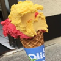
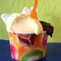
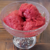
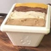

Dégustez nos parfums du moment dans notre glacerie à Yverdon ! En nouveauté, venez découvrir notre Bubble Tea ! Vous y trouverez également des granitas, gaufres, salades...
O’Phil de l’O, vous trouverez plus d'une vingtaine de parfums de glaces et sorbets préparés de manière artisanale par Vincent et Janet Reynaud, de la Gelateria des Oliviers.
Nos parfums tournent régulièrement, afin de vous assurer que votre parfum préféré soit en vitrine, veuillez nous prévenir 72h à l'avance pour vos commandes spéciales.
Disponible en

Cône

Pot

Coupe

Bac*
* Achetez vos glaces en bacs à déguster à la maison ! Possibilité de commander par téléphone pour être servi plus rapidement.